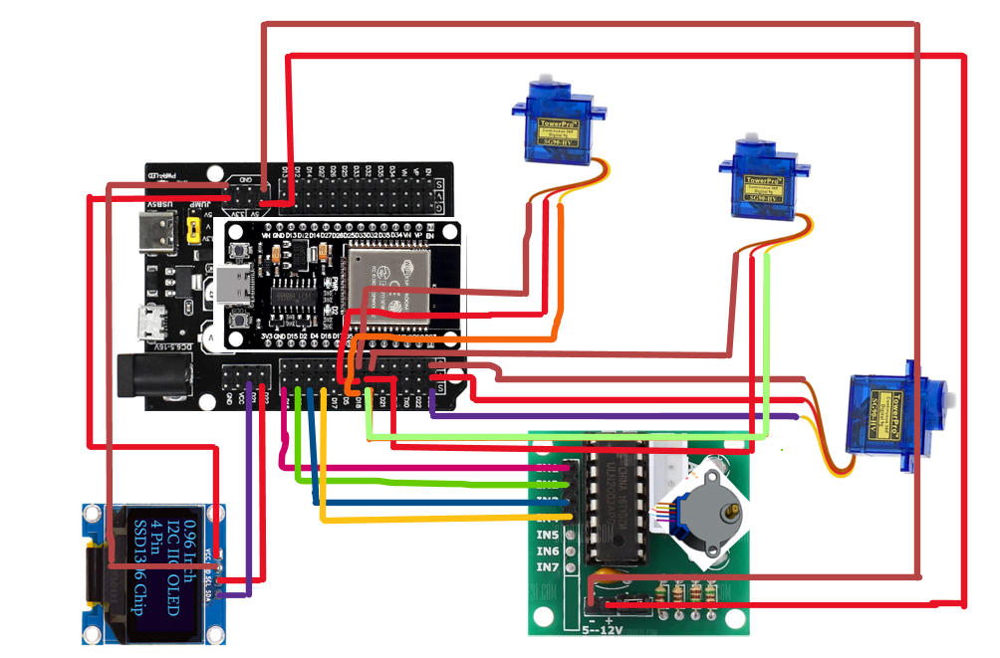
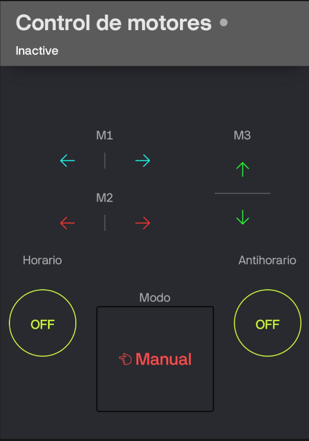

Mini Robotic Arm for a Pneumatic Actuator Using ESP32 and BLYNK
March 2026
Introduction
The objective of this project is to develop a control system for a robotic arm mechanism equipped with a pneumatic actuator, using the ESP32 microcontroller as the main processing unit.
The system is controlled via the Blynk platform, which allows for the implementation of a virtual remote control interface accessible from a mobile device. Through this interface, the user can interact with the system in real time.
An OLED display is included to provide visual feedback, showing the status and movement sequence of the robotic arm during operation.
Project Description
The system has two operating modes: a manual mode, in which the user directly controls the actuators, and a semi-automatic mode, in which a predefined sequence of movements is executed.
Components Used
- ESP32 microcontroller
- 30-pin expansion module for ESP3
- 3 servo motors
- A stepper motor (28BYJ-48) with a ULN2003 driver
- OLED display (SSD1306)
- Blynk mobile app for remote control
Wiring Diagram and Remote Control

Figure 1: Wiring diagram

Figure 2: Buttons for the BLYNK remote control
Video Demonstration
The following demonstrates the actual operation of the actuator and the system's response via the remote interface.
Project Resources
All the materials needed to replicate this system are available free of charge. We recommend reading the user manual to ensure the proper implementation of this project.